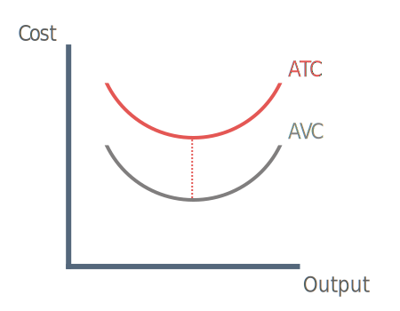
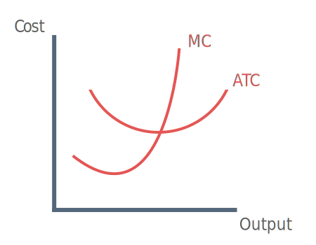

What are short-run costs?
Short-run costs of production relate to the different expenses that firms face when producing a good or service. There are four main types of short-run costs that we should focus on here:
1) Fixed Costs
Fixed costs do not vary with output, no matter how many goods are produced fixed costs remain the same. For example if renting a factory costs £200 per month this cost is not affected by the amount of goods produced.
Total Fixed Costs (TFC)
Total Fixed costs remain the same at each level of output in the short-run.
Average Fixed Costs (AFC)
AFC = TFC / Output
Average fixed costs will fall consistantly as output increases, this is because total fixed costs are spread over a higher level of production. This is often referred to as spreading the overheads.
2) Average Variable Costs
Variable costs vary with ouput. If output increases, then variable costs will increase. For example as a technology firm produces more computers more must be spent on raw materials such as metal and plastic.
Equation: Aveage Variable Cost (AVC) = Total Variable Cost (TVC) / Quantity
3) Average Total Cost

Average Total Cost = total cost (TC) / output (Q)
Average total cost (ATC) is the cost per unit produced. When Economists say 'average cost' they often referring to average total cost.
4) Marginal Costs
Marginal cost is the change in the total cost that arises when producing an extra unit of output.
Equation: Marginal cost (MC) = Change in Total Cost (ΔTC) / Change in Quantity (ΔQ)
The marginal cost curve is a tick shape, it looks like this because of diminishing marginal returns. At first as more output is produced the extra (marginal) cost of producing one more unit is falling. There is always some costs, that is why the curve is above zero.
At first as the firm produces more output division of labour will take place and workers will begin to specialise resulting in higher productivity.
At a certain point when all the benefits of divisions of labour have been derived, any extra unit will cost extra than the unit before as the law of diminishing returns sets in. Take the example of a coffee shop, eventually as more labour is employed the workers the begin to get in each other way. Production will increase but more and more slowly.
Consider this, if the wage is £15, then an extra worker costs £15. However each extra worker produces less coffee, the cost of employing workers begins to rise faster than output produced by workers. Marginal costs are therefore increasing.
Law of Diminishing Returns
Note: Diminishing returns only exist in the short-run, when one factor is fixed (e.g capital).
Dimishing returns is referred to in a number of ways that all mean the same thing:
Diminishing marginal productivity
Diminishing marginal returns
Law of variable proportions
Diminishing returns to labour occurs when marginal product of labour starts to fall. This means that total output will be increasing at a decreasing rate.
When a variable factor (labour) is increased, there comes a point where it becomes less productive. This is because when capital is fixed extra workers will start to get in each others way.
Relationship between the marginal and average cost curves
The marginal cost (MC) curve will always cut through the lowest point of the average cost (AC) curve, it is a mathematical certainty.

Imagine you are in a room with 10 other people, everyone is precisely 2 metres tall. The average high is therefore 2 metres. If an extra (marginal) person walks in who is only 1 metre tall then the average would fall, because the marginal is lower than the average.
This what we see happening in the diagram at every point up to Q1 because the marginal cost is lower than the average cost. When the marginal cost rises above the average this pull the average up, using our previous example this is like an extra (marginal) 5 metre tall person walking into the room and dragging up the average.
The relationship between marginal and average cost can be broken down like this:
If marginal cost is below average, then it will pull down average.
If marginal cost is above average, then it will pull average up.